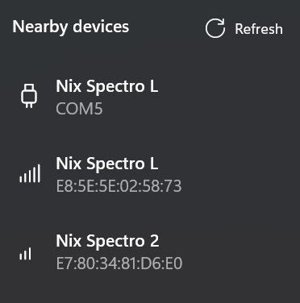

Frequently Asked Questions
This section includes tips on how to troubleshoot common issues that may be encountered when implementing the NixUniversalSDK into your Windows application.
Build errors and compatibility
- I am building an application for .NET 6.0 or higher but am getting a NETSDK1149 error. How do I configure my project to avoid this?
- A NETSDK1149 error generally indicates a missing platform and version qualifier when configuring your project.
- When targeting .NET 6 or higher, you need to include the Windows platform and version qualifiers for your project's target framework.
- For example, in the .csproj file the TargetFramework should be specified like 'net9.0-windows10.0.22621.0' instead of 'net9.0'.
- If the latter is specified (without 'windows' and target version), your project will try and build against a .NET Standard version of the library which is included for compatibility for the older .NET Framework.
- .NET Core 3.1 and .NET 5 are not supported. Only .NET Framework (4.7 and up), or .NET 6.0 on Windows 10 and 11 are supported.
- My application is not written in .NET. Is there a C/C++ interface available?
- It is possible to build a wrapper for the
NixUniversalSDKwhich provides a C/C++ interface. A full-featured project is provided in the examples to accomplish this exact purpose. Refer to Wrapper for Usage in C/C++ for additional details.
- It is possible to build a wrapper for the
- Can I use the Nix Universal SDK in a Windows virtual machine on macOS (for example, in Parallels Desktop)?
- No, it is not recommended to use the Windows version of the
NixUniversalSDKin a Parallels Desktop virtual machine.- Limitations of the BLE pass-through to the virtual machine prevent Bluetooth connections from opening properly.
- USB connections to Nix devices may work unreliably in a virtual machine.
- Instead, it is recommended to support macOS with native applications using our macOS version of
NixUniversalSDK.
- No, it is not recommended to use the Windows version of the
License and activation issues
- The
DeviceScannercannot start and is indicating anErrorLicensestate. How do I resolve this?- Check the license manager state via
LicenseManager.State. This will be one of theLicenseManagerStateenum, which will describe the problem. - Activate the license manager by calling
LicenseManager.Activateand ensure that its state isActivebefore initializing theDeviceScanner.
- Check the license manager state via
- My license is active, but Nix devices immediately disconnect with an
ErrorUnauthorizedstatus.- Depending on license conditions, the
NixUniversalSDKmay require periodic internet access to check if a device is authorized by the active license. - If set by the license, internet connections are required:
- On the first connection of a particular device serial number.
- At least once per 30 day period thereafter.
- If you are behind a firewall, white-list access to https://nixsensor.com/nixserial to ensure that the server can be reached.
- If your license includes provisions for private-labelled devices, these devices may be exempted from this requirement.
- Please contact us via e-mail at sdk@nixsensor.com if alternate license arrangements are required.
- Depending on license conditions, the
Device discovery and connection
- Can a single Nix device be connected to more than one application at a time?
- No, a Nix device can only communicate with a single application running on a single host at any given time.
- Can I open a connection to multiple Nix devices simultaneously inside the same application?
- No, the
NixUniversalSDKis configured to work with a single device at a time.
- No, the
- How long should I run the
DeviceScannerfor when discovering nearby devices?- When discovering Nix devices over Bluetooth, the default 20 second search period is recommended.
- If you wish to use a shorter period, at least 10 seconds is highly suggested.
- Nix devices advertise their presence once per second, but some advertisement packets may be missed due to other Bluetooth traffic. The default 20 second period allows multiple advertisement to be reliably received.
- If you are only interested in finding USB attached devices, consider listing these directly by awaiting
ListUsbDevicesAsync(), which does not require an ongoing search.
- When discovering Nix devices over Bluetooth, the default 20 second search period is recommended.
- The device scanner found more than one device. How should I handle multiple nearby devices?
- It is best practice to show a list of nearby devices in your UI sorted by signal strength (RSSI). Including the device name and ID also helps the user distinguish between devices.
- Note that RSSI is a negative number and ranges from 0 (strongest) to -128 (weakest). Show the strongest signal devices at the top of the list.
- You should prompt your user to bring their Nix device closer to their PC when searching over Bluetooth. This will increase the relative signal strength of their device over other nearby Nix devices.
- It is best practice to show a list of nearby devices in your UI sorted by signal strength (RSSI). Including the device name and ID also helps the user distinguish between devices.
- How should signal strength (RSSI) be used?
- RSSI indicates relative signal strength and ranges from 0 (strongest) to -128 (weakest). When sorting a list of devices by RSSI, sort in descending order (i.e. - show the values closer to 0 at the top of the list).
- Note that USB devices always report an RSSI of '0'. You can and should distinguish between USB and Bluetooth devices in any displayed device list. The
InterfaceTypeproperty allows you to distinguish between the two. - Rather than displaying the RSSI value directly, consider showing it with signal strength icons, as shown in the WinUI3 demo application.

- Bluetooth is not available on my Windows system and the
DeviceScannercannot start. How do I discover USB attached devices in this scenario?- If Bluetooth hardware is unavailable on the Windows system, it is still possible to list USB attached devices without running a device search. Refer to
ListUsbDevicesAsync().
- If Bluetooth hardware is unavailable on the Windows system, it is still possible to list USB attached devices without running a device search. Refer to
- My USB attached Nix device is not recognized or listed by the SDK.
- Verify that your USB cable provides both power and data connection (i.e. - it is a USB data cable and not a simple charging cable).
- Check the Windows Device Manager. Confirm that the Nix device enumerates as a 'USB Serial Port' under 'Ports (COM & LPT)'
- If you are running antivirus software, verify that it is not blocking access to the system COM ports.
- The device scanner is running, but no nearby Nix devices are found.
- For USB attached devices, complete the troubleshooting steps listed above in item #7.
- For Bluetooth attached devices:
- Ensure that the Nix device is charged.
- Ensure that it is not actively connected to another application (see item #1). If in doubt, connecting the Nix device to a charger will reset any active connections.
- Connecting and using a Nix device over Bluetooth seems too slow. Can the connection speed be increased?
- Opening a connection and measuring with the Nix device is an asynchronous process, so some delays are to be expected.
- Negotiating a BLE connection can take 5 to 30 seconds under ideal conditions.
- Measurements are expected to take 2 to 3 seconds under ideal conditions.
- On Windows 11 PCs, Bluetooth performance should follow these expectations. If Bluetooth performance is slow on Windows 11, verify that your application includes the runtime directives listed here.
- On Windows 10 PCs, Bluetooth connection speeds to a Nix device are restricted. This is caused by a limitation in the BLE stack in the Windows 10 SDK.
- On Windows 10, Bluetooth operations may be 2 - 3 times slower than Windows 11. Unfortunately, this is expected behaviour.
- Should faster communications be required, consider implementing a USB connection to the Nix device.
- Opening a connection and measuring with the Nix device is an asynchronous process, so some delays are to be expected.
Other
- Can I rename the Nix device?
- The device name is fixed in the device firmware and cannot be changed.
- Can I assign a nickname to a particular device?
- For Bluetooth devices, the device ID represents a hardware address. Since this is visible during the device search, this can be used by your application to tag or nickname individual devices during a device search or re-connection.
- Note that the ID for USB attached devices is the COM port number, which may be recycled by the Windows system. It is not recommended to use the COM port number for nicknaming purposes.
- Once connected, the device serial number can be used to uniquely identify devices regardless of their connection interface.
- For Bluetooth devices, the device ID represents a hardware address. Since this is visible during the device search, this can be used by your application to tag or nickname individual devices during a device search or re-connection.
- Does the SDK provide access to any existing colour libraries (paint colours, PANTONE, RAL, NCS, etc.)?
- No, the
NixUniversalSDKdoes not provide any colour libraries. Creation and maintenance of colour libraries is the responsibility of the application creator or the application end-user. - When handling your own colour library data, the
ColorUtilsclass provides many helpful functions for manual colour conversions and delta E calculations (e.g. - for colour matching against a library).
- No, the
Next steps
- Review the example applications
- Get additional support